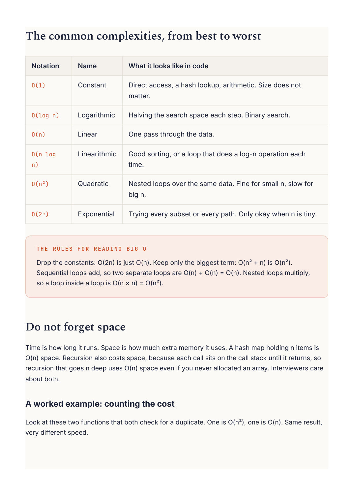
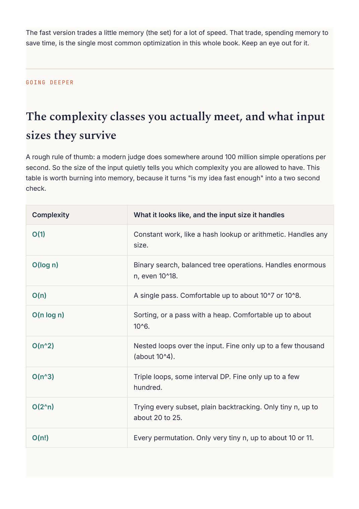

Competitive Programming
Chapter 02
Big O and complexity
Big O is just a way to describe how the amount of work grows as the input grows. It answers one question: if I make the input ten times bigger, does my solution get ten times slower, a hundred times slower, or barely slower at all?
You do not need heavy math for this. You need to look at your loops. A single loop over n items is O(n). A loop inside a loop is usually O(n^2). Cutting the problem in half each step is O(log n). That is 90 percent of what you will use.
O(2ⁿ) work O(n²) O(n log n) O(n) O(log n) O(1) input size The same input, wildly different growth. Aim for the flatter curves.

Good sorting, or a loop that does a log-n operation each Nested loops over the same data. Fine for small n, slow for Trying every subset or every path. Only okay when n is tiny. Drop the constants: O(2n) is just O(n). Keep only the biggest term: O(n² + n) is O(n²). Sequential loops add, so two separate loops are O(n) + O(n) = O(n). Nested loops multiply, Time is how long it runs. Space is how much extra memory it uses. A hash map holding n items is O(n) space. Recursion also costs space, because each call sits on the call stack until it returns, so recursion that goes n deep uses O(n) space even if you never allocated an array. Interviewers care Look at these two functions that both check for a duplicate. One is O(n²), one is O(n). Same result,
# O(n^2): for each element, scan the rest. Slow.
def has_duplicate_slow(nums):
for i in range(len(nums)):
for j in range(i + 1, len(nums)):
if nums[i] == nums[j]:
return True
return False
# O(n): remember what you have seen in a set. One pass.
def has_duplicate_fast(nums):
seen = set()
for x in nums:
if x in seen:
return True
seen.add(x)
return False
// O(n^2): for each element, scan the rest. Slow.
boolean hasDuplicateSlow(int[] nums) {
for (int i = 0; i < nums.length; i++) {
for (int j = i + 1; j < nums.length; j++) {
if (nums[i] == nums[j]) return true;
}
}
return false;
}
// O(n): remember what you have seen in a set. One pass.
boolean hasDuplicateFast(int[] nums) {
Set<Integer> seen = new HashSet<>();
for (int x : nums) {
if (seen.contains(x)) return true;
seen.add(x);
}
return false;
}

The fast version trades a little memory (the set) for a lot of speed. That trade, spending memory to save time, is the single most common optimization in this whole book. Keep an eye out for it. The complexity classes you actually meet, and what input A rough rule of thumb: a modern judge does somewhere around 100 million simple operations per second. So the size of the input quietly tells you which complexity you are allowed to have. This table is worth burning into memory, because it turns "is my idea fast enough" into a two second Constant work, like a hash lookup or arithmetic. Handles any Binary search, balanced tree operations. Handles enormous Nested loops over the input. Fine only up to a few thousand Trying every subset, plain backtracking. Only tiny n, up to Every permutation. Only very tiny n, up to about 10 or 11.
R E A D T H E C E I L I N G B A C K W A R D S
If the problem says n can be 100000, you are being told to find an O(n) or O(n log n) solution, because O(n^2) would be ten billion operations and time out. If n is at most 20, you are being invited to do something exponential like backtracking. The constraints are a hint, not just a limit.
A word on amortized and average cost
Some operations are usually cheap but occasionally expensive, and we care about the average over many calls. Appending to a dynamic array is O(1) amortized: most appends are instant, and the rare resize that copies everything is spread thin across all the cheap ones. Hash map lookups are O(1) on average but O(n) in a pathological worst case where everything collides. For interviews and contests, the average and amortized numbers are what you plan around, but it is worth knowing the worst case exists.